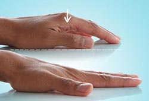

ေလ့က်င့္ ခန္း(၂)

၂။ ေလ့က်င့္ ခန္း ၂ က ေတာ့
သင့္ လက္ ကို စားပြဲ ေပၚ ေမွာက္ လ်က္ တင္ ပါ။
သင့္ လက္ ေခ်ာင္း မ်ား လက္ ဖဝါး တို႔ကို စားပြဲႏွင့္ ကပ္ ႏိုင္ သမွ် အားသံုးျပီး ကပ္ လိုက္ပါ။
မိနစ္ ဝက္ သို႕ တစ္ မိနစ္ ေလာက္ ထားပါ။
အနည္း ဆံုး ၄-၅ ခါ ေလာက္ လက္ ႏွစ္ ဘက္ လံုး ျပဳလုပ္ ပါ။